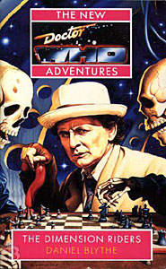

|
The Dimension Riders
|
BASIC PLOT DOCTOR COMPANIONS MATERIALISATION CIRCUIT Pg 17: The TARDIS dematerializes from the lawn at St Matthew's College, Oxford, then rematerializes about 50 feet away on the same lawn, then dematerializes again. Or so it appears. In fact, it has been returned to St Matthew's by the Garvond, and is now operating its DITO. But we only find that out later. Pg 18 On Space Station Q4, 2381. Pg 44 The TARDIS dematerializes in a very unusual way. We later discover that this is a defence mechanism and it's gone back to Oxford, 1993. Pg 186 The TARDIS dematerializes from Oxford, once again surrounded by green light. It arrives on the Station Q4 on Pg 196 Pg 230 The TARDIS materializes around the Icarus and then takes it back to its own time, one week later. By page 232, the Doctor has returned his TARDIS, himself and his crew to St Matthew's College, Oxford, but this time not on the lawn.. PREPARATORY READING CONTINUITY REFERENCES Pg 2 adds in The Ancient and Worshipful Law of Gallifrey, the book from Shada, which appears quite a lot throughout this novel. The mystery villain of the series, The Meddling Monk (The Time Meddler, The Dalek Masterplan, Blood Heat) and his unwilling sidekick, a captured Chronovore (The Time Monster, Blood Heat) appear. "'The Doctor,' said the captor's gleeful voice, 'has just returned from one of those interesting alternative universes.'" Blood Heat. Pgs 2-3 "'Almost the same time, almost the same place.'" Blood Heat was set in 1993 on an alternative Earth. The Doctor is now in 1993 on the real Earth. Pg 3 "The previous test of the Doctor had been a challenge." Blood Heat again. Pg 7 Chess sets always make me think of Lady Peinforte from Silver Nemesis. Many of the NAs have reference to the Doctor playing the Universe as if it were a game of chess. Pg 15 "'Amazingly enough, I'd deduced that much,' said Bernice with a smile. 'Tea?'" This sequence, and indeed many in this book, obliquely reference Shada, except in Oxford not Cambridge. Bernice does not ask how many lumps Tom requires. "Well, I - wasn't planning to stay long, actually. I wanted to borrow a couple of books." Again, the borrowing of books is a relevant plot point in Shada. Pgs 16-17 and other places include reference to Harry, the porter, who fulfils a very similar function to the porter in Shada. Pg 18 "And you don't know your way around this one properly." This is the Third Doctor's TARDIS from the alternative universe in Blood Heat. And Ace is quite right. Pg 19 "He flipped open a panel and, fishing a laseron probe from his pockets, began to make a few experimental prods and pokes." A laserson probe appeared in The Robots of Death. This is clearly something completely different. Vaiq uses the laseron variety on Pg 219 as well. Pg 20 Reference to the TARDIS translation circuits. The Doctor asks Ace to get the artron meter and the vector gauge. Artron energy is said to power TARDISes in Four to Doomsday. The Third Doctor had issues with his vector gauge. The Cloister Bell, harbinger of danger when being script edited by Christopher H Bidmead and in the early new adventures, rings. But this time only in Ace's head. Pg 24 "Ace held up a small gold cylinder. It held a stump of lipstick. 'I got lucky. Sorry about the mess.'" Nyssa and Tegan marked their way around the TARDIS corridors in the same way in Castrovalva. Mention is made of Romana (and the Doctor muddling up older companions is consistent with his behaviour in Castrovalva as well, though why he is doing it now is not entirely clear). Pg 25 Reference to the cyberwars, but see Continuity Cock-Ups. "Ace had seen too much death in the last five years." This refers to her time away from the Doctor, between Love and War and Deceit. Pg 28 "The Doctor mopped his face with his paisley handkerchief. 'Machines,' he said. 'Always back to humans in the end.'" This kind of paraphrases what the Doctor says about weapons in Remembrance of the Daleks, and is of a similar sentiment. Pg 29 Ace is aware of the TARDIS translation circuits, how they work and, tellingly, when they are working. This would seem to contradict The Masque of Mandragora, but most of the companions of the NAs seem aware of this aspect of the TARDIS, so presumably later Doctors tell their companions. The Ninth Doctor certainly does in The End of the World. Pg 38 "I don't like being threatened by frightened men, Lieutenant. The last one was a drunk in Victoria Bus Station - before your time, of course, dreadful place anyway -" When this happened is uncertain, but it may explain one of the reasons that the Doctor 'can't stand bus stations' as he stated in Ghost Light. Blythe continues to reference many of the Seventh Doctor television stories in this sort of way during the course of this book. Pg 39 "'I'm the Doctor and this is my friend Ace.' 'Not good enough.' 'Well, that satisfies most people. Try under my hat.'" The Doctor's ID is still under his hat, as it was in Battlefield and, amongst other places, Deep Blue. It's still ludicrous and still not funny. And his ID includes: "United Nations Intelligence Taskforce? Rather behind the times, aren't we, "Doctor"? Interplanetary Visa... Prydonian Chapter Debating Forum... Oxford Union Society?" UNIT (The Invasion et al), we've not seen the Visa before but the Doctor does have lots of money (The Crystal Bucephalus, Players etc.), the Doctor is a member of the Prydonian Chapter on Gallifrey (The Deadly Assassin, Divided Loyalties etc.), The Oxford Union is new. "'Life member,' offered the Doctor hopefully. 'Frankly, Doctor, I'm not impressed.' 'I might have known. Cambridge man, are you?' 'Moonbase Academy, actually.'" We visited the Moonbase in The Moonbase and The Seeds of Death. There's a Lunarversity there in Transit, by 2109, to which this may be referring. Pg 40 "'Oh, by the way,' she said, 'you are under arrest.' To Ace's fury, the Doctor's face broke into a broad smile. 'Splendid,' he said, 'not before time.'" The Doctor also wanted to get arrested in The Happiness Patrol. Pg 42 "She often used to wonder if he really formulated plans or if he just made it up as he went along, but she had stopped wondering long ago, even before the first parting with him." In Love and War. Pg 44 "When the lamp on top of the police box began to pulsate, it was not with its usual soft, blue light. Jade-green and jagged, it dashed splinters of radiance around the dusty hold." The colour here just may be a reference to the Jade Pagoda version of the TARDIS seen in Iceberg, given that this is a defensive response of the TARDIS. The green stuff might also be the Time Soldiers attacking the TARDIS. Pgs 48-49 This scene with Harry the Porter is very similar to a scene in Shada, although reversed (this time the villain got here first). Pg 56 Amanda mentions Brigadier Lethbridge-Stewart and then: "'But would I know of the Zygon gambit?' Amanda purred, and slipped from her seat with grace. 'Or the Shoreditch incident?' she added, her mouth unnecessarily close to Rafferty's ear. 'Or how about your paper on the dust samples taken from the Auderly House explosion?'" Terror of the Zygons (using the phraseology that the Doctor used for it in Remembrance of the Daleks - is that how it's referred to officially?), Remembrance of the Daleks itself, and Day of the Daleks. Notice that the Black Dalek becomes dust in Remembrance of the Daleks and it is presumably Dalek dust that Rafferty analysed. So this entire sequence refers to Remembrance of the Daleks somehow. Auderly may be spelled wrong (it may be 'Auderley') but since Terrance Dicks calls it 'Austerley' in his novelisation, we'll let Blythe off. Pg 63 "Towards the end of his fourth incarnation he had even contemplated giving up the whole intergalactic trouble-shooter life for good and retiring for an extended fishing holiday on Florana." The Doctor is clearly considering this during The Androids of Tara. Florana was the destination the Doctor was attempting to reach at the beginning of Death to the Daleks. It's a holiday planet with effervescent water, so presumably all the fish float to the surface. Shouldn't be too tough to catch them then. This is also one of Douglas Adams' unused storylines for the final story of season 17, tying in to the novel's Shada motif. Pg 66 "Alcohol,' she admitted languidly, 'has a corrosive effect on the interstitial nuclei of my anterior hypolthalamus." Well, it would, wouldn't it? Interstitial time is apparently important in The Time Monster, though I'm damned if I can explain why. Pg 77 "When we left Earth, Professor Xoster's tachyon experiments were at a very primitive -" These are experiments in time travel. They won't work. The Leisure Hive proves that Tachyonics isn't the way to go and The Talons of Weng-Chiang shows that humanity does not have functioning time travel by the 49th century. "'Good Lord. If I went there I might meet myself.' 'Take it from me,' said the Doctor as he dealt again, 'that can be profoundly embarrassing.'" The Three Doctors, The Five Doctors, The Two Doctors, Cold Fusion, or possibly, in a different way, Mawdryn Undead. Pg 78 Mention of Draconians. "Strakk often bemoaned the fact - mostly to women after several glasses of Voxnic - that he was the only officer on board with a sense of humour." The Doctor got drunk on Voxnic in Slipback, I am sorry to report. Pg 80 "I don't have an organization. I was in one once, it made me disorganized." UNIT, presumably. Pgs 81-82 feature a silly story concerning a Bojihan (new race) who speaks Morestran (Planet of Evil, Zeta Major). There is a really easy solution to the problem that Ballantyne found himself in here, but it seems he just didn't think of it. Wouldn't trust him as my commander. Pg 83 has another mention of tachyonics, this time in the 20th century. Doesn't matter, still won't work. Pg 90 "Forming details - limbs, helmets, broad-nosed blasters - as they entered the real world, the Time Soldiers leapt, de-phasing, through solid metal. Traces flickered behind them like after-images." The way the Time Soldiers move is not dissimilar to the Tharils in Warriors' Gate. Pg 94 Another mention of the recent cyberwars. Pg 97 "'But the true path of time has been disrupted.' 'But how -' 'Don't ask. It's something people like me feel, like the mugginess before a thunderstorm.'" This is presumably similar to what the Doctor and Romana felt in City of Death. Pg 110 Mention of Ian Chesterton and Professor Travers Pgs 110-111 "concerning the matter of a small metallic sphere which was evidently not of this world." This is the Yeti control sphere from The Abominable Snowman, The Web of Fear and Downtime. Pg 114 references the Blinovitch Limitation Effect. (Day of the Daleks et al.) Pg 115 "The Doctor sat bolt upright, and Terrin was unnerved by the compelling light in those eyes of... what colour?" This references the changing eye colour of the Second Doctor in the novelisations. The NAs took this and played with it, and, consequently, the Doctor's eyes are deliberately of inconstant colour. Pg 126 "Among the Time Lords, he had been nothing. Known at the Academy by the code of Epsilon Delta, he had become a mere attendant to Gold Usher." The Epsilon Delta thing may be a reference to the Doctor being known as Theta Sigma (The Armageddon Factor and other places), although the Doctor's was a nickname, not a code. Gold Usher was a ceremonial role that we first saw in The Deadly Assassin. Pg 127 mentions, fleetingly, the Panopticon, the heliotrope robes (of the Patrexes, although they aren't mentioned here by name), the Rani and the Master. There's a fully functional Type 102 TARDIS (see Continuity Cock-Ups). Pg 128 "although he gathered that little had been heard of that troublemaker [The Master] on Gallifrey for quite some time - many doubted, indeed, that he was still alive." It's not clear when the President left Gallifrey. This makes the most sense if we assume it's before The Keeper of Traken, since the Master has been calcified on Traken for some time. "Twice this Doctor had been put on trial for his actions, and both times he had actually come out of it quite well." The War Games (see season 6b, the flashback in Players and World Game) and The Trial of a Time Lord. "He saw the gas sculptures of Remmosica, the Leisure Hive on Argolis, the pyramids in the sands of Earth..." Uncertain reference, The Leisure Hive and, possibly, Pyramids of Mars and The Sands of Time. Reference to Sontarans. Pg 129 "They would travel together to a period of 'crystallized' time, a thousand year period in the history of Earth. As the President knew, these stretches of immutable Time were rare and possessed a huge inertia." This is consistent with the Virgin approach to time travel, in that the Doctor's activities crystallize how time must turn out. Presumably the period in question is from around the 1960s onwards, given that it is from here that the Doctor is most active in the defence of the planet. Pg 130 "Through the creature, the President (as he now liked to call himself, following the Gallifreyan renegades' tradition of adopting titles) learned the pleasure of true malice." The Gallifreyan Renegades sounds like a bad school rock band, but the point is valid. Pg 136 "He identified himself as 'Theta Sigma'." The old nickname from The Armageddon Factor again. Pg 138 The Doctor reads about "The ravaging of the fields of Time. Just as recorded in the Future Legends." in The Worshipful and Ancient Law of Gallifrey. We've heard about the Future Legends before, referenced, either directly or obliquely in Timewyrm: Revelation and The Infinity Doctors among many others. Pgs 140-142 are a rough reprise of the Coffee Shop scene in Remembrance of the Daleks, although not so beautifully carried out. Pg 143 "'I wanted to die,' he said quietly, 'once. When they took me to see Anji's body.'" We are presuming that this is not our good friend Anji Kapoor. Or at least, let us hope not. "A friend of mine got in a fire. It wasn't an accident." This is a reference to Manisha. Ghost Light, the novelisation of Remembrance of the Daleks and Blood Heat. Pg 147 name-checks Old High Gallifreyan, the Matrix, the Panatropic Net and Rassilon. Here the Panatropic Net is described as part of the Matrix, which is consistent with every Gallifreyan story except The Deadly Assassin, where the Matrix was part of the APC. Pg 151 mentions 'one of' Ace's visits to the Sixties. Possibly Remembrance of the Daleks. Pg 158 "'The creature is made up of mental energy - the intellects it fed off in the Time Lord Matrix.' He looked up, and there was a hint of slight amusement in his face. 'Including the paradox. The woodlouse in the woodpile. The one I thought I had erased,' he said. 'My own.' Terrin and Vaiq exchanged glances. 'Your... mind?' Vaiq asked slowly. 'Well, influence. A print. A poor copy, if you like.'" It's not entirely clear when and how this happened (possibly a result of Blythe having to shoe-horn the Alternate Universe concept into his book). Pg 199 makes it clear that the Doctor discovered about the Garvond during Shada. The next time the Doctor had access to the Matrix, then, would have been Arc of Infinity. Maybe it happened here, or maybe during The Trial of a Time Lord, although both times he was worrying about other things. It may be a different time altogether: see Pg 236. Pg 162 Benny observes the conversation between the Doctor and the President in the style of a tennis match. Something similar happened in The Caves of Androzani (I think). Pg 163 "If the Doctor recognized her allusion to recent events on a parallel Earth, he did not let it show." Blood Heat. It's mentioned again further down the page. Pg 164 "The Doctor was far from surprised when he saw that the androids had silently taken the forms of twentieth-century human police officers." Androids did similar things in Resurrection of the Daleks. Pg 177 "And the others, who had not been so lucky. Mike. Shreela. Jan." Mike from Remembrance of the Daleks, Shreela from Survival and Cat's Cradle: Warhead (she dies in the latter) and Jan from Love and War. "In the corner, a stuffed bird, watching her with swivelling eyes. Creepy. That old word." Ghost Light. Pg 178 "And above her, the accusing eyes, the lost eyes, of the face she wanted to love. The face of Audrey, her mother." The Curse of Fenric, Timewyrm: Revelation, Happy Endings. Pg 179 "The part of her soul which flowed with the fire of mistrust. Mistrust of the Doctor." Ace's doubts over the Doctor's actions and behaviour are an important part of the Alternate Universe arc, and are resolved in No Future. Pg 181 has the TARDIS using the DITO (the Defence Indefinite Timeloop Option), which is similar to the HADS (The Krotons), but moves the ship in Time and Space, not just space. It's used again in The Left-Handed Hummingbird. The Doctor's explanation 'When we first arrived in Oxford' makes little or no sense, since the TARDIS was last seen on Q4. Let's assume he's simplifying. Pg 193 "'Destruction can be a creative force'" vaguely echoes Ace's 'Blowing up the art-room was a creative act' from Battlefield. This may not be deliberate. Pg 198 "'So,' he said, 'here I am at last. We have had fun and games, haven't we? There must be simpler ways. Couldn't you simply have challenged me to a game of chess? Or ping-pong?'" The chess game refers to The Curse of Fenric. Pg 199 "'Remember, there is some corner of a Garvond's field that is forever -' The Doctor tapped the side of his own head. 'Doctor.'" This reflects a comment made by Bernice at the end of Love and War, to whit that a part of The Doctor's mind would be forever Bernice. "That Skagra business." Shada. Pg 201 Rafferty has returned the Type 102 to the Icarus, possibly by using the Fast-Return switch (which he may even have heard about from Ian Chesterton). Pg 207 "For this TARDIS, plucked from a world where its owner had died a shattering death, did not trust this man who called himself the Doctor." Blood Heat. Pg 212 In the TARDIS library: "'I had no idea this was here.' It was called 200 Poems on The Transit System. He threw it aside." This references Transit, obviously, as well as the real-life collection 'Poems on the Underground', which prints poems that were printed on the London Underground System. Pg 213 "One of them fell on Ace's foot, and as she picked it up she saw the title clearly: Communications Networks and Temporal Rectification by Prydonian Chancellor Parjtesa-Kalayenthzor Rodan." Presumably the Rodan from The Invasion of Time, although she's a Traffic Guard there, not a Prydonian Chancellor. Maybe she's come up in the world since then, maybe it's a relative, maybe it's just a co-incidence of names. Whatever it is, it's slightly annoying to keep attempting continuity references that are actually slightly wrong. "And, slowly toppling, a rusty pushbike." Cat's Cradle: Time's Crucible. "The Doctor shook his head sadly. 'Entropy.'" Logopolis. Pg 218 "'I think,' the Doctor murmured, 'that I may have made another slight miscalculation.'" This is a nod to the end of Remembrance of the Daleks Part 3, where the Doctor looks straight at the audience and announces much the same thing. Interestingly, that's one of the very few cases where the cliffhanger is not repeated in full at the beginning of the next episode, as they miss that bit out in part 4. Pg 220 "The Doctor's hearts were pounding. He could see the Garvond, cowled and waiting like Death in Bay C of the bus station. So it was playing with him now. Playing off his deepest fears... Gritting his teeth, he strode out across the bus station concourse. He tried to ignore the lost luggage that swarmed like yapping dogs around his feet." This is hysterically funny, although it's not meant to be. The Doctor revealed that he didn't like bus stations in Ghost Light, along with burnt toast, amongst other things. As a consequence, I was fully expecting that the next torture that the Garvond was going to inflict on the Doctor was a room full of Burnt Toast, from which the Doctor would undoubtedly recoil in mortal dread. The speech in Ghost Light was poetry, Mr. Blythe; it was not meant to be taken quite so literally. Pg 221 "She saw death tearing through a world she had known as true and real, not too long ago." Blood Heat again. Pg 230 "Ace was resting her chin on one hand, and with the other she was bouncing the yo-yo over the edge of the observation platform. She'd found the toy in one of the TARDIS's rooms of junk." It's probably The fourth Doctor's (The Ark in Space etc). "The difficult part, he'd confided to Ace, had been materializing the TARDIS around the Icarus." Ace, under the Doctor's instructions, materialized the TARDIS around the entire planet Earth in Blood Heat. This one should have been child's play by comparison. Pg 232 "I left him once before, a while ago, when something between us was half-finished." Love and War again. Pg 235 "and a paperback, 500 Exciting Recipes with Root Vegetables, that she'd found there on the table." It's possible that this refers to the presence of potatoes in twelfth-century England in the novelisation of The Time Warrior: Dicks put them into the story as script editor; Holmes, the writer, had him take them out because they were anachronistic, and then Dicks put them back in when he wrote the novelisation. I'm therefore always suspicious of references to potatoes and root vegetables in Doctor Who books. With thanks to John Wilson, who pointed out the potato discrepancy to me in the first place. Pg 236 "The Doctor took a deep breath of the November air again. 'Well, now I'm here... Out of all great evil must come something good, as someone once said.'" It was him, actually. In Genesis of the Daleks. "'Rather that I'd prevented it from coming into being. By removing something rather vital from the Net when I -' He stopped. There were things which not even Ace was ready to be told. 'Well, never mind when,' he muttered a little grumpily." This implies that there is even more to be told on the matter of the Doctor messing with the Matrix. I cannot remember if this avenue was ever explored. It's certainly not back when he was The Other, since he didn't know about the Garvond until Shada. Any ideas, anyone? Pg 237 refers to Blood Heat and the mysterious time meddler who is changing the Doctor's past. Sets up the next three books. Pg 239 The Doctor's reconfiguration of the TARDIS by smashing bits of it continues in No Future, but then he appears to draw it to a close. Pg 240-241 feature the Meddling Monk and his trapped Chronovore, who will continue to appear briefly in The Left-Handed Hummingbird and Conundrum, and more fully in No Future. OLD FRIENDS AND OLD ENEMIES NEW FRIENDS AND NEW ENEMIES Darius Cheynor, who returns in Infinite Requiem. Dr Ferris Mostrell (but he's now a baby), Lt Albion Strakk, TechnOp Rosabeth McCarran, Supervisor Septimus Ballantyne, Co-ordinator Helina Vaiq, Tom Cheynor and Harry (a porter). James Rafferty (Professor of Extra-Terrestrial Studies at St Matthew's College, Oxford) is a new character, but he and the Doctor are old friends apparently. A Professor of Extra-Terrestrial Studies seems so natural in the Who Universe, it's a wonder it hasn't been done before. The Garvond, an evil from the dawn of time. Also known as the Garavond or Garivont, the name is a corruption of gjara' vont which means 'of darkest thought.' There are similarities to the Valeyard and the Dark Matrix of Matrix.
CONTINUITY COCK-UPS PLUGGING THE HOLES [Fan-wank theorizing of how to fix continuity cock-ups] FEATURED ALIEN RACES The Time Soldiers, who were people once, of various races, including Earth people, Gallifreyans and Tharils. FEATURED LOCATIONS In the 20th Century: Heathrow Airport, Terminal Two, Sunday November 21st, 1993. Oxford, November 18th 1993 (a Thursday, maybe - it is in real life) including the Botanical Gardens, St Matthew's College (which doesn't exist, but, according to the author, occupies the same space as St John's College, which does), the Randolph Hotel, The Covered Market, Radcliffe Square and two pubs: The Turf and The Eagle and Child. The latter is the place that Tolkien and friends met up, and therefore possibly also a drinking place for Professor Reginald Tyler of Mad Dogs and Englishmen. In the 24th Century: Station Q4 in the fifty-fourth sector of space, late 24th Century, two time zones, a week apart (March 22nd and March 29th). Infinite Reqiuem dates this to 2381 (page 15 of that book). The Survey Ship Icarus, which answers to a command centre on or called Lightbase. Space, in an area local to Space Station Q4. Terrin has been to the Rho Magnus settlement, when it was infected by berax spores. IN SUMMARY - Anthony Wilson |
|
 |